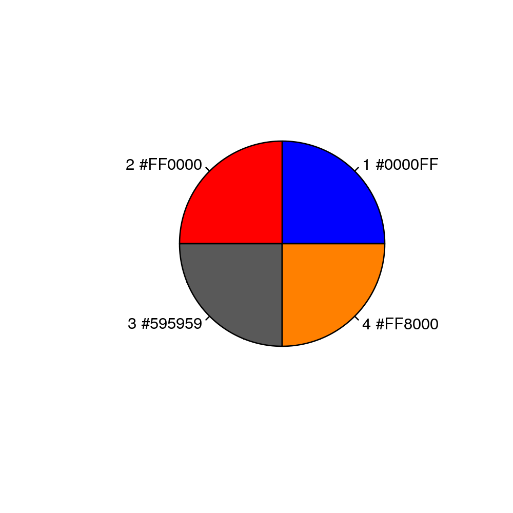

vmd.colors(n = 33, picker = FALSE, ...)
rgb function, including
alpha transparency. This function creates a character vector of the colors used by the VMD molecular graphics program.
The function uses the underlying 33 RGB color codes from VMD, See http://www.ks.uiuc.edu/Research/vmd/. Note that colors will be recycled if “n” > 33 with a warning issued. When ‘picker’ is set to “TRUE” a color wheel of the requested colors will be plotted to the currently active device.
Returns a character vector with color names.
Grant, B.J. et al. (2006) Bioinformatics 22, 2695--2696.
## Generate a vector of 10 colors clrs <- vmd.colors(10) vmd.colors(4, picker=TRUE)
1 2 3 4 "#0000FF" "#FF0000" "#595959" "#FF8000"